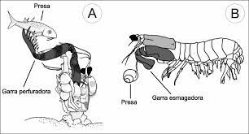

Fatos sobre o Stomatopoda
Stomatopoda (Odontodactylus scyllarus), chamados popularmente de tamarutacas ou de lacraias-do-mar no Brasil, é uma ordem de crustáceos marinhos da subclasse Hoplocarida, que agrupa cerca de 400 espécies, caracterizadas principalmente pela morfologia da segunda pata torácica, que é modificada em apêndice subquelado, lembrando uma pata de louva-a-deus.
- Reino: Animalia
- Filo: Arthropoda
- Subfilo: Crustacea
- Classe: Malacostraca
Sua visão
Os estomatópodes são predadores ativos que caçam presas com o auxílio de um sentido de visão muito apurado e capaz de interpretar polarização no espectro ultravioleta e infravermelho).

Perfuradoras e Esmagadoras
São animais que apresentam comportamentos sociais muito variados, desde ameaças visuais contra predadores até comportamentos de côrte. De acordo com a anatomia da sua pata raptorial é possível distinguir entre dois grupos funcionais, as perfuradoras (spearers) ou as esmagadoras (smashers), sendo que cada um dos tipos apresenta sua própria variação comportamental e até mesmo de habitat.
Nomes Populares
Também conhecidas como esquilas ou lagosta-boxeadora, espalhadas pelas costas dos mares tropicais e subtropicais. Além das patas, elas apresentam uma silhueta característica, devido ao grande comprimento aparentemente de seu abdómen. Os ovos ficam ligados por uma massa gelatinosa que a mãe carrega contra o ventre até que eclodem, limpando-os sem parar.